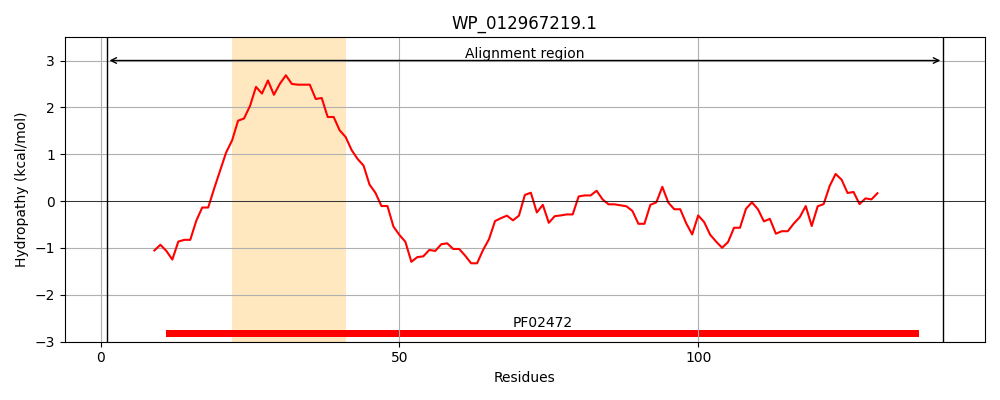
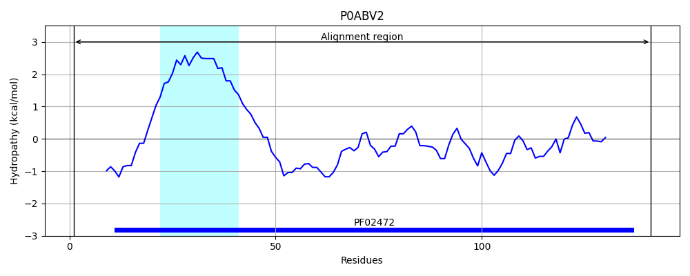
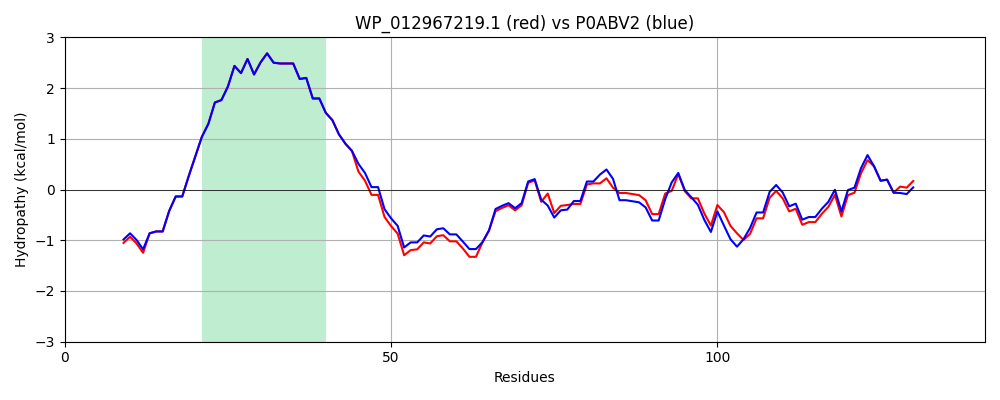

Hit Accession: P0ABV2
Hit TCID: 1.A.30.2.1
Hit Description: gnl|BL_ORD_ID|8726 gnl|TC-DB|P0ABV2|1.A.30.2.1 Biopolymer transport protein exbD OS=Escherichia coli (strain K12) GN=exbD PE=1 SV=1
Mach Len: 141
e:0.000000
Query TMS Count : 1
Hit TMS Count: 1
TMS-Overlap Score: 1.000000
Predicted Substrates:CHEBI:9175;sodium(1+), CHEBI:5584;hydron
BLAST Alignment:
Score: 643 , Bit scores: 252 bits, E-value: 4.9e-88, Alignment length: 141, Percentage identity: 87
Query: 1 MAMRLNENLDDNGEMHEINVTPFIDVMLVLLIIFMVAAPLATVDVKVNLPASSSQPQPRPEKPIYLSVKADKSMFLGNDPITEANMINALDSLTAGKKDTTVFFRADKTVDYETMMKVMDTLHQAGYLKIGLVGEETVKAK 141
MAM LNENLDDNGEMH+INVTPFIDVMLVLLIIFMVAAPLATVDVKVNLPAS+S PQPRPEKP+YLSVKAD SMF+GNDP+T+ MI AL++LT GKKDTT+FFRADKTVDYET+MKVMDTLHQAGYLKIGLVGEET KAK
Sbjct: 1 MAMHLNENLDDNGEMHDINVTPFIDVMLVLLIIFMVAAPLATVDVKVNLPASTSTPQPRPEKPVYLSVKADNSMFIGNDPVTDETMITALNALTEGKKDTTIFFRADKTVDYETLMKVMDTLHQAGYLKIGLVGEETAKAK 141 | Protein Hydropathy Plots: |
|---|
|  |  |
Pairwise Alignment-Hydropathy Plot:
|
|---|
|  |